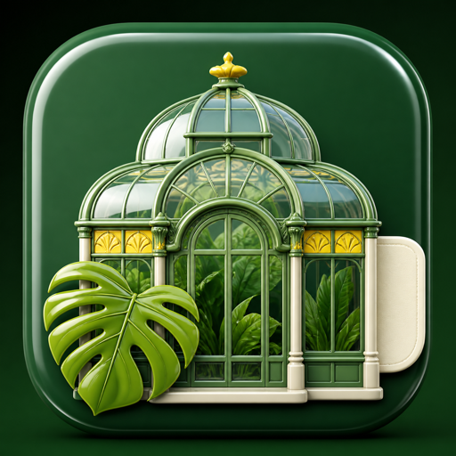

Dahlem · visit shape
Berlin Plant Passport
Stamp three honest parts of your day. I will turn them into one calm Botanic Garden visit shape instead of another sprawling checklist.

This is a planning lens, not a live ticket or weather service. Finish the three stamps, then check the Garden’s own page before you travel.
Stamp your visit
Choose what your real day can carry. There is no wrong combination; the point is to stop pretending every garden visit needs the full site.
Your cover
Weather lensLet rain, heat or wind shape the order; do not let it cancel the whole idea.
Your honest time
Pace lensA short visit is not a failure; it just needs one clear anchor.
Your aim
Attention lensPick the thing you would remember, rather than collecting rooms and paths for their own sake.
Passport issued
Your Garden shape
Opening times, ticket queues and weather exceptions change. Check the Garden’s live visitor information before you set out.
The passport does not store your choices. It is a calm way to decide between glasshouses and outdoor paths; it does not promise a particular display, entrance, event or service.